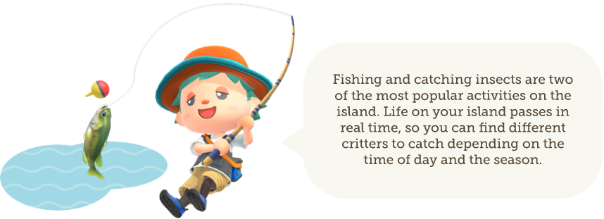

Live life at your own pace as you garden, fish, decorate, hunt for
bugs and fossils, get to know the animal residents, and more.
The time of day and seasons match real life, so something is happening
on your island whether you’re there or not.

New to Animal Crossing: New Horizons? Come get the lay of the land and
learn what to expect when you set out to create your own island
paradise.
If you’re an island life veteran already, we hope you
will share this video with newcomers and welcome them with open arms!
 © 2001 - 2020 Nintendo. Nintendo properties are trademarks of
Nintendo. This version was copied only for academic purposes.
© 2001 - 2020 Nintendo. Nintendo properties are trademarks of
Nintendo. This version was copied only for academic purposes.